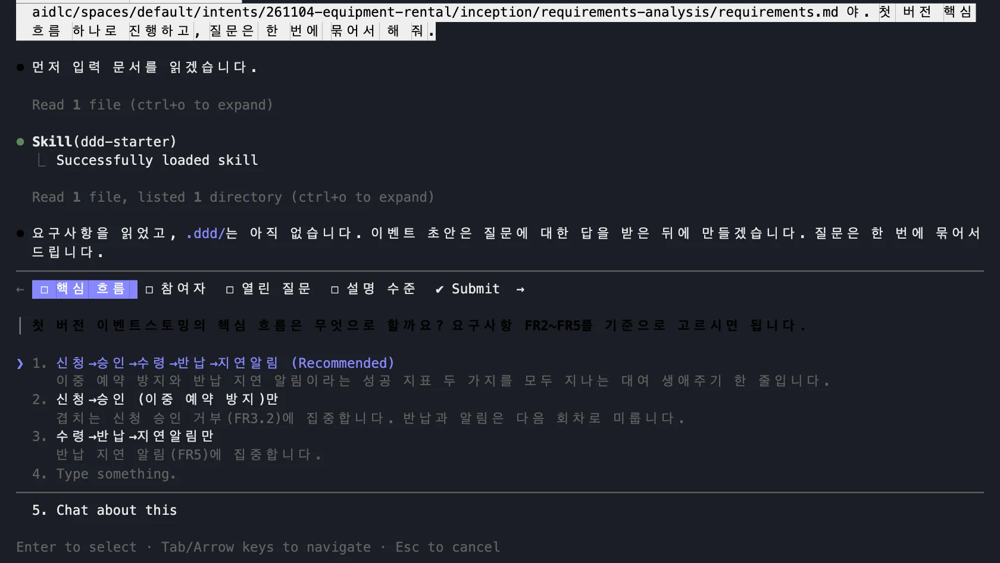
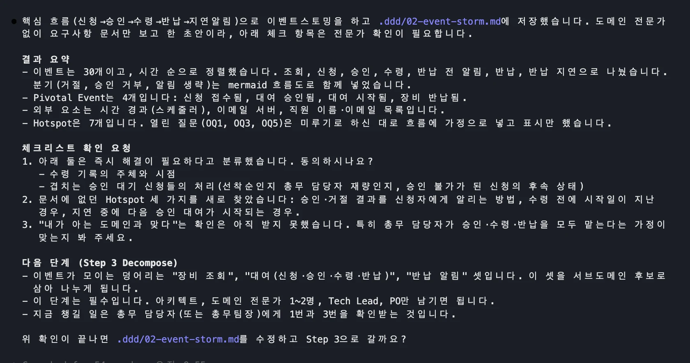
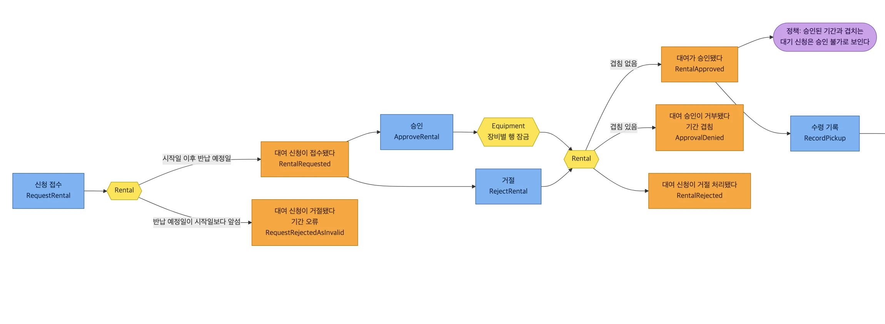
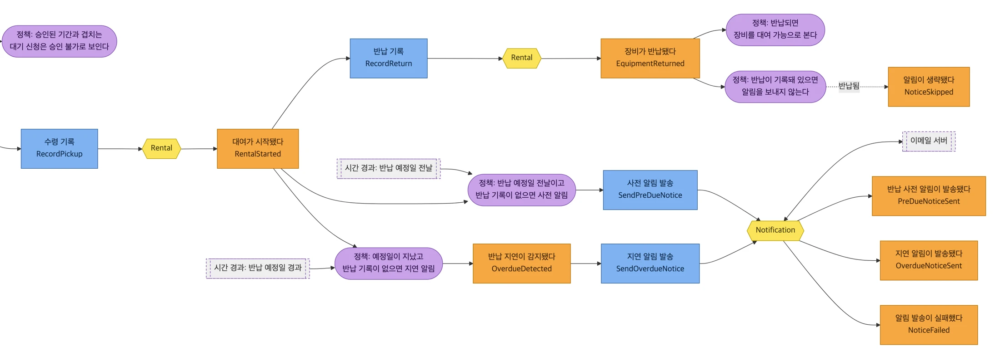
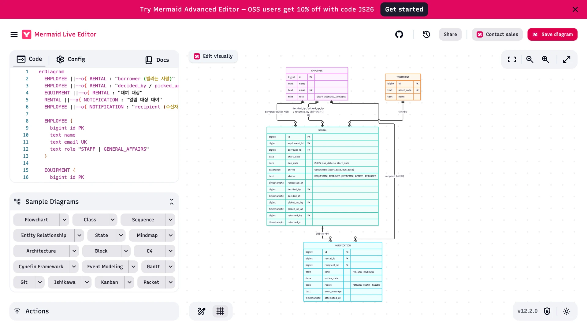
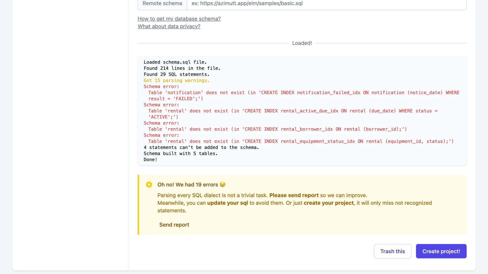
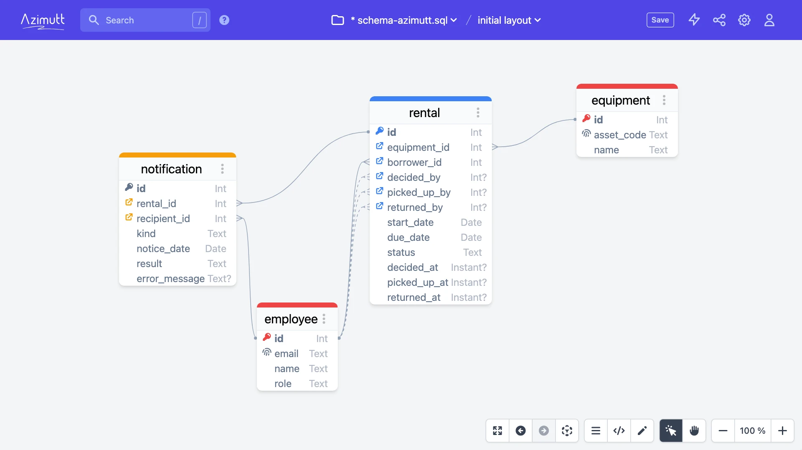
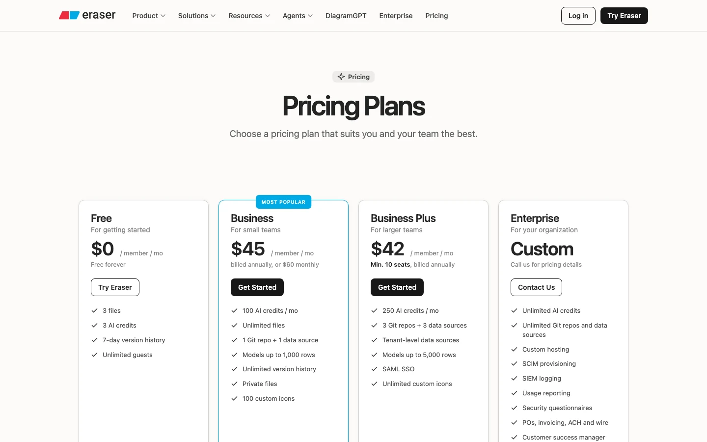

ddd-starter 스킬로 이벤트 스토밍을 하고, Mermaid로 보드와 ERD를 그린 뒤, 겹침 금지 규칙이 든 DDL을 PostgreSQL에서 실제로 돌려 봅니다.
스티커 네 가지로 업무를 그립니다#
이벤트 스토밍은 스티커 네 가지로 업무를 그립니다. 주황은 이미 일어난 사실, 파랑은 그것을 일으키는 요청, 라일락은 자동으로 따르는 규칙, 노랑은 규칙을 지키는 단위인 애그리게잇입니다. 이벤트부터 모으고 나머지를 붙입니다.
도메인 이벤트
이미 일어난 사실. 과거형으로 씁니다.
대여가 승인됐다
커맨드
사건을 일으키는 요청. 누가 무엇을 시킵니다.
승인
정책
사건이 나면 자동으로 따르는 규칙.
예정일이 지났고 반납 기록이 없으면 지연 알림
애그리게잇
명령을 받아 규칙을 지키는 단위.
Rental
읽는 순서: 커맨드 → 애그리게잇 → 이벤트 → 정책 → 다음 커맨드. 이벤트부터 모으고, 나머지를 붙입니다.
스킬: Claude Code에 절차를 가르치는 폴더#
스킬은 클로드 코드에 절차를 가르치는 폴더입니다. 저장소를 스킬 폴더로 받으면, 이벤트스토밍 하자고 말할 때 자동으로 켜집니다. ddd-starter는 도메인 주도 설계 8단계를 안내하는 한국어 스킬입니다. 오늘은 발견과 코드, 두 단계만 합니다.
git clone https://github.com/uengine-oss/ddd-starter-skill-kor ~/.claude/skills/ddd-starter
스킬이 하는 일
- SKILL.md에 적힌 절차를 필요할 때 읽습니다
- "이벤트스토밍 하자"라고 말하면 자동으로 켜집니다
- 결과는 .ddd 폴더에 마크다운으로 남습니다
ddd-starter의 8단계
이해, 발견, 분해, 전략, 연결, 조직, 정의, 코드
오늘은 굵은 두 단계만 합니다. 실제 프로젝트에서는 도메인 전문가와 함께 전 과정을 진행합니다.
요구사항 문서로 이벤트 스토밍을 시작합니다#
요구사항 파일을 입력으로 이벤트 스토밍을 시작합니다. 스킬이 켜지고 네 가지를 묻습니다. 핵심 흐름, 누가 참여하는지, 열린 질문을 어떻게 다룰지, 설명 수준입니다. 도메인 전문가가 없다고 답하면 확인할 곳을 핫스팟으로 남깁니다.
이벤트스토밍 하자. 입력은 (1부의 requirements.md 경로) 야.
첫 버전 핵심 흐름 하나로 진행하고, 질문은 한 번에 묶어서 해 줘.

묻는 것과 우리 답
- 핵심 흐름: 신청 → 승인 → 수령 → 반납 → 지연 알림
- 참여자: 혼자, 문서 기준
- 열린 질문: 핫스팟으로 표시하고 미룸
- 설명 수준: 숙련자 모드 (처음이면 초심자 모드)
이벤트 30개, 전환점 4개, 핫스팟 7개#
결과는 이벤트 30개, 흐름이 바뀌는 전환점 4개, 핫스팟 7개입니다. 요구사항에 없던 질문도 셋 나왔습니다. 수령 전에 시작일이 지나면 어떻게 하는지, 지연 중에 다음 대여가 시작되면 어떻게 하는지 같은 것입니다. 시간 순서로 펼치면 이런 빈틈이 보입니다.

문서에 없던 핫스팟 3개
- 승인·거절 결과를 신청자에게 어떻게 알리나
- 수령 전에 시작일이 지나면 어떻게 하나
- 지연 중에 다음 승인 대여가 시작되면 어떻게 하나
우리가 답한 2개
- 수령과 반납은 총무 담당자가 기록
- 겹치는 대기 신청은 담당자가 골라 승인
보드로 그립니다: 신청과 승인#
이어서 이벤트에 커맨드와 정책, 애그리게잇을 붙여 달라고 요청합니다. 머메이드 코드로 나오므로 화면으로 볼 수 있고 저장소에도 남습니다. 승인 커맨드가 장비와 대여 애그리게잇을 거쳐, 겹침이 없으면 승인됨, 있으면 승인 거부로 갈라지는 것이 보입니다.

요청: "이벤트에 커맨드(파랑), 정책(라일락), 애그리게잇(노랑)을 붙인 보드를 Mermaid flowchart로 .ddd/board.mmd에 저장해 주세요."
수령, 반납, 시간이 일으키는 알림#
뒷부분입니다. 사람이 누르지 않아도 시간이 지나면 정책이 움직입니다. 예정일 전날이면 사전 알림을, 예정일이 지났는데 반납 기록이 없으면 지연 알림을 보냅니다. 발송 실패도 이벤트로 남습니다.

사람이 누르지 않아도 시간이 지나면 정책이 움직입니다. 점선 상자가 바깥에서 오는 신호입니다. 알림 실패도 이벤트로 남습니다.
스티커가 데이터 모델로 옮겨 가는 길#
스티커가 데이터 모델로 옮겨 가는 길입니다. 애그리게잇은 테이블이 되고, 이벤트는 상태와 시각 칼럼이 됩니다. 지켜야 할 규칙은 데이터베이스 제약이 되고, 정책은 뷰나 작업으로 갑니다. 프롬프트의 핵심은 마지막 문장입니다. 겹침 금지 규칙이 DDL에 드러나야 한다고 분명히 요구합니다.
| 보드 | 우리 스키마 |
|---|---|
| 애그리게잇 Rental | rental 테이블 (PK, 장비·직원 FK) |
| 이벤트 RentalApproved | status = APPROVED, decided_by, decided_at |
| 지켜야 할 규칙(불변식) | 겹침 금지 제약 rental_no_overlap_excl |
| 정책: 승인 불가로 보인다 | 저장하지 않고 뷰에서 계산 (승인 가능 여부) |
| 정책: 지연 알림 | v_overdue_rental 뷰 + notification 테이블 |
이 흐름만 Step 8 애그리게잇 설계로 갑니다. 애그리게잇 설계 캔버스를 쓰고, ERD를 .ddd/erd.mmd,
PostgreSQL DDL을 .ddd/schema.sql에 저장해 주세요. 겹침 금지 불변식이 DDL에 드러나야 합니다.
Mermaid Live에서 ERD를 봅니다#
머메이드 라이브를 엽니다. 가입하지 않아도 됩니다. ERD 파일을 코드 칸에 붙여 넣으면 바로 그려집니다. 직원, 장비, 대여, 알림, 네 테이블과 관계가 보입니다. 코드가 곧 그림이라 저장소에서 변경 이력을 볼 수 있습니다.

- mermaid.live를 엽니다. 가입하지 않아도 됩니다
- .ddd/erd.mmd를 Code 칸에 붙여 넣습니다
- 테이블 네 개와 관계를 눈으로 읽습니다
코드가 곧 그림이라 저장소에서 변경 이력을 볼 수 있습니다. GitHub도 마크다운 안의 Mermaid를 그려 줍니다.
규칙이 스키마 안으로 들어갔습니다#
DDL의 핵심 부분입니다. 같은 장비에서 승인되었거나 대여 중인 기간은 서로 겹칠 수 없다는 제약입니다. 승인 대기는 대상에서 빠져 겹쳐도 접수됩니다. 요구사항과 맞습니다. 앱에 버그가 있어도 데이터베이스가 마지막에 막습니다. 그런데 AI가 쓴 이 코드, 정말 동작할까요?
period daterange GENERATED ALWAYS AS
(daterange(start_date, due_date, '[]')) STORED,
CONSTRAINT rental_no_overlap_excl
EXCLUDE USING gist (equipment_id WITH =, period WITH &&)
WHERE (status IN ('APPROVED', 'ACTIVE'))
- 같은 장비에서 승인·대여 중인 기간은 서로 겹칠 수 없습니다
- 승인 대기는 대상이 아니라서 겹쳐도 접수됩니다. FR2.2와 맞습니다
- 앱에 버그가 있어도 데이터베이스가 마지막에 막습니다
돌려 보기 전에는 믿지 않습니다#
임시 포스트그레스 컨테이너에 스키마를 넣고 돌려 봅니다. 겹치는 두 신청은 모두 접수됩니다. 첫 신청을 승인한 뒤 둘째를 승인하면 데이터베이스가 제약 위반으로 거부합니다. 뷰에는 승인 불가와 막고 있는 대여 번호가 나옵니다. 겹치지 않는 신청은 승인됩니다. 요구사항대로 동작했습니다.
docker run -d --rm --name pg -e POSTGRES_PASSWORD=lab postgres:16-alpine
docker cp .ddd/schema.sql pg:/tmp/s.sql && docker exec pg psql -U postgres -f /tmp/s.sql
| 시험한 일 | 실제 결과 |
|---|---|
| 05-01~03, 05-02~04 두 신청 접수 | 둘 다 REQUESTED로 접수 |
| 첫 신청 승인 | UPDATE 1 |
| 겹치는 둘째 신청 승인 | ERROR rental_no_overlap_excl 위반 |
| 승인 가능 여부 뷰 조회 | 2번 신청 approvable = f, 막는 대여 |
| 겹치지 않는 05-04~06 승인 | APPROVED |
스키마는 오류 없이 설치되었고, 시험 다섯 가지 모두 요구사항대로 동작했습니다.
같은 날 반납하고 바로 빌릴 수 있습니까?#
1부 검토에서 나온 질문을 다시 만납니다. 5월 3일에 반납한 장비를 그날 바로 빌릴 수 있을까요? AI는 양끝 포함을 골랐고, 실제로 승인이 거부되었습니다. 끝을 빼면 허용됩니다. 코드 글자 하나 차이지만 업무 결정입니다. AI는 가정을 밝혔고, 답은 총무 담당자가 합니다.
5/1
5/2
5/3
5/4
5/5
5/6
승인된 대여 5/1 ~ 5/3
새 신청 5/3 ~ 5/5
'[]' 양끝 포함 (AI가 고른 값)
5/3에서 겹칩니다. 실제로 승인이 거부되었습니다.
'[)' 끝 제외
같은 날 반납하고 바로 대여할 수 있습니다.
코드 글자 하나 차이지만 업무 결정입니다. AI는 가정을 밝혔고, 답은 총무 담당자가 합니다.
Azimutt: 도구의 경고를 읽어야 합니다#
아지뮤트에 원본 스키마를 올리면 오류가 납니다. 문장 29개 중 경고가 15개이고, 고급 구문이 있는 대여와 알림 테이블을 건너뜁니다. 그냥 프로젝트를 만들면 핵심 테이블이 없는 그림이 됩니다. 고급 구문을 뺀 간략본을 넣으면 네 테이블과 관계가 모두 나옵니다. 도구의 경고는 꼭 읽어야 합니다.

원본 문장 29개, 경고 15개. EXCLUDE와 GENERATED가 있는 rental과 notification을 건너뜁니다.

간략본 고급 구문을 뺀 DDL을 넣으니 네 테이블과 관계가 모두 나옵니다.
"Create project!"를 그냥 누르면 핵심 테이블이 없는 그림이 됩니다. 업로드는 azimutt.app/new의 From SQL structure에서 가입 없이 됩니다.
Eraser와 Mermaid AI: 말로 그리는 다이어그램#
말로 다이어그램을 그리는 SaaS도 있습니다. 이레이저는 무료 AI 크레딧이 3회입니다. 가입 없이 작업 공간은 열렸지만 AI 요청에는 응답이 없어서, 가입 후 쓰는 것으로 안내합니다. 머메이드 차트는 지금 mermaid.ai로 운영됩니다. 오늘 실습에는 무료 라이브 에디터로 충분했습니다.

| 도구 | 요금 |
|---|---|
| Eraser Free | AI 크레딧 3회 |
| Eraser Business | $45, 연 결제, 월 100회 |
| Mermaid Free | 다이어그램 3개 |
| Mermaid 유료 | $10, $20 (AI 연 300, 2,000회) |
Eraser는 가입 없이 작업 공간이 열리지만, AI 요청을 보내고 90초를 기다려도 응답이 없었습니다. 가입 후 쓰는 것으로 안내합니다.
Mermaid Chart는 지금 mermaid.ai로 운영됩니다. 무료 Live Editor로 충분하면 유료는 필요 없습니다.
2부 확인 문제#
2부를 정리합니다. 승인 대기가 겹쳐도 되는 이유는 제약 조건에 승인과 대여 중만 있기 때문입니다. 양끝 포함 여부는 업무 담당자가 정합니다. 도구가 말없이 빠뜨린 것은 경고를 읽어야 보입니다. 쉬는 시간 전에 파일 네 개를 확인합니다.
| 문제 | 답 |
|---|---|
| 승인 대기 신청은 왜 겹쳐도 접수됩니까? | 제약의 WHERE 조건에 승인·대여 중만 있기 때문입니다 |
| '[]'와 '[)'는 누가 정합니까? | 업무 담당자입니다. 같은 날 반납·대여 허용 여부입니다 |
| Azimutt에서 rental이 사라진 이유는? | 파서가 고급 구문을 읽지 못해 건너뛰었습니다 |
쉬는 시간 전에 확인합니다
- .ddd 폴더에 02-event-storm.md, board.mmd, erd.mmd, schema.sql이 있습니다
- 겹치는 승인이 실제로 거부되는 것을 봤습니다